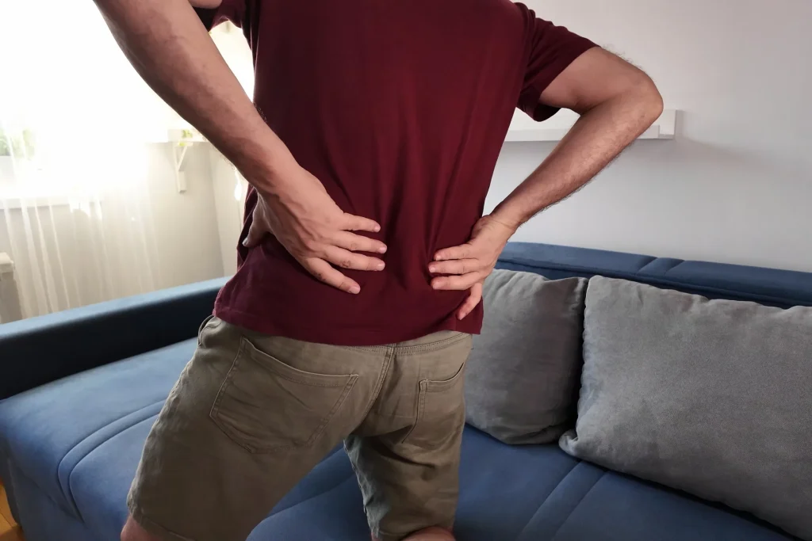

Non-surgical Spinal Decompression in Dumont
A gentle, motorised traction approach for the low back, aimed at easing pressure on an irritated disc or nerve, without surgery and without medication.

Spinal decompression is a gentle, motorised form of traction. You lie comfortably on a table while it applies slow, controlled cycles of stretch to the low back, easing pressure across the discs and the space the nerves travel through. It is a non-surgical option often used for disc-related back and leg pain, and it works alongside hands-on care and movement rather than in place of them.
Spinal decompression gets some big promises attached to it online. Here is the grounded version: what it actually is, how it works, who it tends to suit, and an honest word on what the evidence does and does not say.
What is spinal decompression?
It is a specific kind of traction, delivered by a motorised table rather than by hand. You are secured comfortably on the table, which applies slow, gentle cycles of pull and release to the low back. The idea is to gently ease pressure across the discs and open a little more room where the nerve roots exit, which for the right person can take the edge off an irritated disc or nerve.
It is not dramatic and it should not hurt. Most people find the sessions relaxing, and many read or rest through them. It is one tool among several, and we use it where it fits rather than as an answer to everything.
Who is it for?
Decompression tends to suit low back and leg pain that has a disc or nerve-compression component, the kind where sitting makes it worse and a disc shows up as part of the picture. It is not right for everyone, and part of a good assessment is being honest about whether you are a good candidate.
- Low back pain linked to a bulging or herniated disc.
- Sciatica or leg pain from a nerve being crowded in the low back.
- Pain that eases when the spine is gently unloaded.
- People who want to try a non-surgical option before considering anything more.
Some situations are not suited to decompression, including certain fractures, advanced osteoporosis, and some post-surgical spines. That is exactly what the first assessment is for, and we will tell you plainly if it is not the right fit.
What does a session involve?
You stay fully clothed and lie down comfortably while the table does the work in slow, gentle cycles. A session is unhurried and should feel like a relieving stretch, never a strain. We pair it with the hands-on care and movement that address why the disc got overloaded in the first place, because the table alone does not change your day-to-day loading.
What does care cost, and do you take insurance?
No referral is needed to book an assessment, and we are happy to check your benefits for you first so there are no surprises. Coverage for decompression varies by plan, and we will always walk you through the numbers, and whether you are a good candidate, before anything begins.
- No referral needed to book a first assessment.
- We verify your benefits for you ahead of time, so you know what to expect.
- Clear, up-front pricing and an honest read on whether it suits you, before you commit.
We cannot promise a specific outcome or what your insurance will cover, and decompression is not right for every back. What we can promise is an honest assessment of whether it fits your case, and a straight answer either way.
About 5% of the population in developed countries is affected by intervertebral disc disease each year, according to the U.S. National Library of Medicine. Disc-related back and leg pain is common, and decompression is one non-surgical option among several worth an honest look for the right person.
Source: U.S. National Library of Medicine, MedlinePlus Genetics: Intervertebral disc disease. medlineplus.gov
Spinal Decompression is available at our Dumont clinic, conveniently located at 24 Grant Ave. We see patients from across Dumont · Haworth · New Milford · Bergenfield · Cresskill · Demarest · Oradell · Closter · Emerson. Learn more about our Dumont practice and the full range of care we provide.
Areas We Serve
The benefits of Spinal Decompression in Dumont
Non-surgical and no medication
Aimed at a specific problem
We will tell you if it is not for you
What to expect at our Dumont clinic
An assessment before anything else
A clear yes or no
The sessions themselves
Reviewed as you go
What patients say
“The doctors, the staff the entire team is exceptional! I highly recommend the back care center! Is a place where you walk in and you feel like at home they truly care about your health and well-being, if anyone has back issues please come here ! AMAZING I HAVE NO MORE PAIN !! THANK YOU!”
“I’ve had an excellent experience at The Back Center. I first came in with significant pain and several complications, but after just a couple of months, I’m feeling so much better and my back has improved tremendously. Dr. Schwartz is truly amazing—he takes his time to explain everything clearly and always makes sure I fully understand my treatment. I’m very grateful for the care I’ve received!”
“The staff is very friendly and knowledgeable. The doctors take their time assessing you and thoroughly inform you of their findings. My shoulder was bothering me since the spring. I started seeing Dr. Schwartz at the end of August and I’ve seen a huge improvement. Almost back to normal.”
Spinal Decompression FAQ: Dumont
For most people with common, mechanical disc-related pain, gentle decompression has a strong safety record, and the sessions are slow and low-force. The first visit is a careful history and check, partly to confirm you are a good candidate, because some spines are not suited to it. If yours is one, we will tell you rather than proceed.
It should not. Most people find decompression relaxing, more like a slow, relieving stretch than anything forceful. If anything feels sharp or uncomfortable during a session, we adjust it or stop; it is not a case of pushing through.
Honestly, the evidence is mixed and not as strong as the marketing around it suggests. It helps some people with disc-related pain and not others, which is why we assess whether you are a good candidate rather than promising a result. We would rather be straight with you than oversell it.
It varies with the problem and how you respond, and a course is usually a series of sessions rather than a one-off. After your assessment we will give you a realistic sense of the number and check that it is actually helping as we go, rather than committing you to a long block up front.
The only honest answer is: let us look. Decompression suits disc and nerve-compression pain in the low back, but not every back, and some conditions rule it out. A short assessment settles whether it fits your case, and we will point you elsewhere if it does not.
A non-surgical option, honestly assessed.
Or call us directly: (201) 387-7463
You might also look at

Disc injury
The disc problem decompression is most often used for.

Sciatica & leg pain
When a crowded nerve in the low back sends pain down the leg.

Back pain
The everyday low-back pain that a disc can escalate.